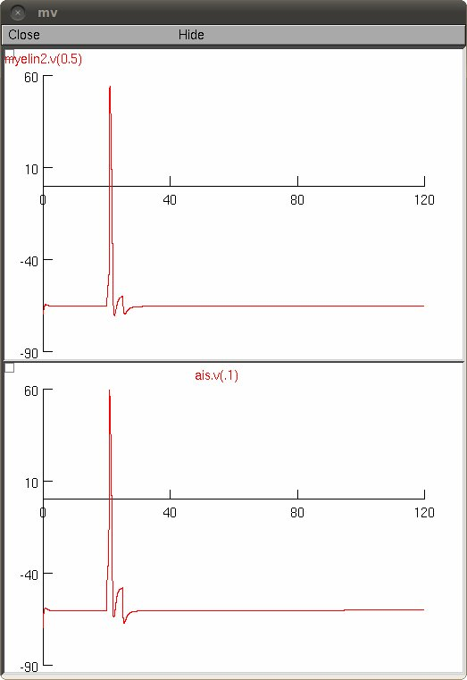

This is the readme for the model code for the paper Foust AJ, Yu Y, Popovic M, Zecevic D, McCormick DA (2011) Somatic membrane potential and Kv1 channels control spike repolarization in cortical axon collaterals and presynaptic boutons The Journal of Neuroscience 31(43):15490-15498 These files were supplied by Amanda Foust. To run auto-launch from ModelDB or download and extract the archive, compile the mod files with mknrndll (windows or mac), or nrnivmodl (linux). Double click the mosinit.hoc file (windows) or drag and drop mosinit.hoc on the nrngui icon (mac), or type the command "nrngui mosinit.hoc" (linux). Once started you can click the "inject node" button. Some voltage and current traces will be displayed, for example:  The default parameters correspond to the top traces in figure 4B and those in figure 4C in the paper.